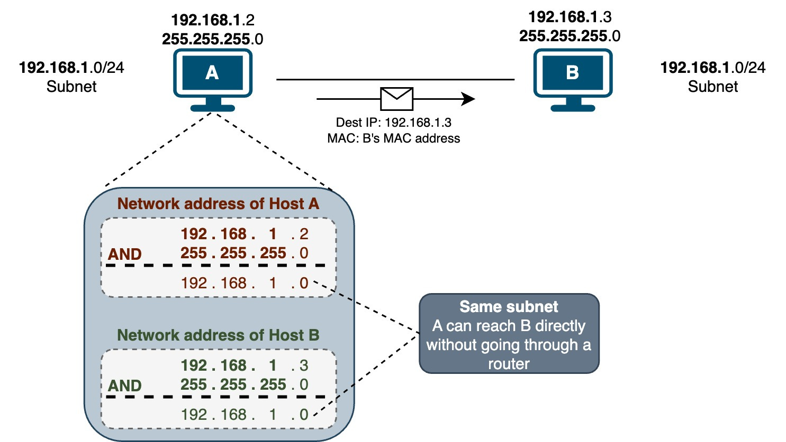
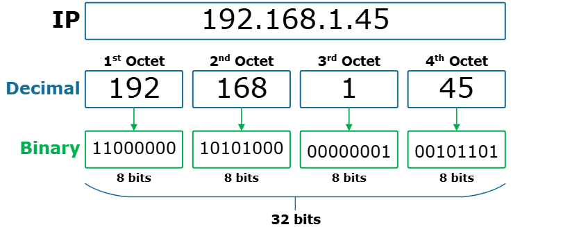

IP Address & Ports¶
🌍 1️⃣ What is Networking?¶
Networking allows devices to communicate with each other over a network (LAN or Internet).
Example:
Your laptop
A cloud server (AWS/Azure)
A database server
An API server
All communicate using IP addresses and Ports.
🧭 2️⃣ What is an IP Address?¶
✅ Definition
An IP (Internet Protocol) Address is a unique identifier assigned to each device on a network.
👉 It works like a home address for your computer.
🔹 Example of IP Address
192.168.1.10
🔹 Types of IP Addresses
1️⃣ IPv4 (Most Common)¶



32-bit number
Format: x.x.x.x
Range: 0 – 255 per section
Example:
192.168.0.1
2️⃣ IPv6 (Modern Version)
128-bit number
Created due to shortage of IPv4
Much larger address space
Example:
2001:0db8:85a3:0000:0000:8a2e:0370:7334
🏠 3️⃣ Public vs Private IP¶
Type Description Example
Public IP Accessible from internet 8.8.8.8
Private IP Used inside local network 192.168.x.x
🔌 4️⃣ What is a Port?¶
✅ Definition
A Port is a logical communication endpoint on a device.
👉 IP = Building address 👉 Port = Apartment number
Without port, server doesn’t know which service to send data to.
🔢 Port Number Range¶
Range Type
0 – 1023 Well-known ports
1024 – 49151 Registered ports
49152 – 65535 Dynamic/Private ports
🔹 Common Port Numbers
Port Service
80 HTTP
443 HTTPS
22 SSH
21 FTP
3306 MySQL
5432 PostgreSQL
5000 Flask default
8000 FastAPI default
6667 KAFKA
🌐 5️⃣ IP + Port Together¶
When you run Flask:
python app.py
It runs at:
http://127.0.0.1:5000
Breakdown:
127.0.0.1 → IP address (localhost)
5000 → Port number
🔹 What is 127.0.0.1?
It is called:
Localhost
It means:
Your own computer
Loopback address
Used for testing
🔄 6️⃣ How Communication Works¶
Step-by-step:
Client sends request to IP + Port
Router directs traffic
Server listens on that port
Server processes request
Response sent back
🧠 7️⃣ What Does "Listening on a Port" Mean?¶
When you start a server:
app.run(port=8000)
The server is:
Listening for incoming connections on port 8000.
If no app listens on a port → connection fails.
🔍 8️⃣ How to Check Your IP¶
Windows - ipconfig
Mac/Linux - ifconfig
🔥 9️⃣ Important Concepts¶
🔹 Open Port
If a port is open:
It accepts incoming traffic
Example:
Port 3306 open → MySQL accessible
🔹 Closed Port
No service running → connection refused.
🔹 Firewall
Controls which ports are allowed or blocked.
Example:
Cloud server allows only port 80 & 443
📊 1️⃣0️⃣ Real Example (API Deployment)
Suppose:
Server Public IP: 13.234.55.10
FastAPI running on port 8000
You access:
http://13.234.55.10:8000
If port 8000 blocked in firewall → Not accessible.
🚀 1️⃣1️⃣ Networking in Data Science
Since you're learning API & deployment, IP and ports are important for:
Deploying ML models
Hosting dashboards
Connecting Power BI to MySQL
Cloud VM setup
Docker container networking
🌐 IP Address Classes (IPv4)¶
📌 Definition
IP address classes are categories in the original IPv4 addressing system that divide IP addresses into groups based on:
Network size
Number of hosts
First octet (first number) range
This system is called Classful Addressing.
An IPv4 address is a 32-bit number, written as:
x.x.x.x
Each octet ranges from 0 to 255.
🅰️ Class A
Designed for very large networks
Uses 8 bits for network, 24 bits for hosts
First Octet Range:
1 – 126
IP Range:
1.0.0.0 – 126.255.255.255
Private Range:
10.0.0.0 – 10.255.255.255
Hosts per Network: ~16 million
🅱️ Class B
Designed for medium-sized networks
Uses 16 bits for network, 16 bits for hosts
First Octet Range:
128 – 191
IP Range:
128.0.0.0 – 191.255.255.255
Private Range:
172.16.0.0 – 172.31.255.255
Hosts per Network: ~65,000
🅲 Class C
Designed for small networks
Uses 24 bits for network, 8 bits for hosts
First Octet Range:
192 – 223
IP Range:
192.0.0.0 – 223.255.255.255
Private Range:
192.168.0.0 – 192.168.255.255
Hosts per Network: 254
🅳 Class D
Used for multicasting
Not used for assigning devices
First Octet Range:
224 – 239
IP Range:
224.0.0.0 – 239.255.255.255
🅴 Class E
Used for research and experimental purposes
Not used publicly
First Octet Range:
240 – 255
IP Range:
240.0.0.0 – 255.255.255.255
📌 Quick Summary
Concept Meaning
IP Address Identifies device
Port Identifies service on device
IP + Port Identifies specific application
127.0.0.1 Local machine
Public IP Internet accessible
Private IP Local network only